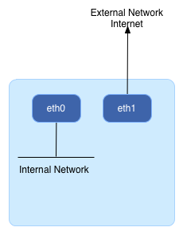

OpenStack Grizzly Installation - Single Node
Ubuntu and Network Configuration
In this section you will perform the following tasksConfigure Ubuntu
-
Change to super user mode for rest of the document
$sudo su
-
Add Grizzly repositories to get the packages for OpenStack Grizzly release:
#apt-get install ubuntu-cloud-keyring python-software-properties software-properties-common python-keyring #echo deb http://ubuntu-cloud.archive.canonical.com/ubuntu precise-updates/grizzly main >> /etc/apt/sources.list.d/grizzly.list
- Update and Upgrade the Ubuntu System:
#apt-get update #apt-get upgrade #apt-get dist-upgrade
Note: On AMD machines create a volume-group called “cinder-volumes” while installing Ubuntu12.04 and for Intel machines create an empty partition which can later be used for creating a volume-group
Network Configuration
Network Interfaces
For OpenStack Single-Node setup you will require 2 NIC's, One NIC
10.42.0.51is used for external network connection i.e, Internet access and the other NIC192.168.100.51is used for internal networking (OpenStack management).-
Edit Network Settings to add configuration for two interfaces
eth0andeth1.#vi /etc/network/interfaces #For Exposing OpenStack API over the internet auto eth1 iface eth1 inet static address 10.42.0.51 netmask 255.255.255.0 gateway 10.42.0.1 dns-nameservers 4.4.4.4 #Not internet connected(used for OpenStack management) auto eth0 iface eth0 inet static address 192.168.100.51 netmask 255.255.255.0 -
Restart Network Services
#/etc/init.d/networking restart
Note: The external NIC should have a static IP address.
Network Utilities Installation and Configuration
Install VLAN and bridge-utility
VLAN and bridge-utility packages are required for OpenStack Networking
#apt-get install -y vlan bridge-utils
Enable IP Forwarding
This step is required for GRE tunneling
#sed -i 's/#net.ipv4.ip_forward=1/net.ipv4.ip_forward=1/' /etc/sysctl.conf
To save you from rebooting, perform the following
#sysctl net.ipv4.ip_forward=1
MySQL & RabbitMQ Installation
MySQL Database is required to store information about OpenStack components - Users, Tenants, Images, Networks, Routers, Virtual Machine etc in this database.
Follow the Steps listed below
Install MySQL
Execute apt-get command to download mysql-server and python-mysql
packages.
#apt-get install -y mysql-server python-mysqldb
During the install, you'll be prompted for the mysql root password. Enter a password of your choice and verify it.
Configure MySQL
Bind mysql to all IP addresses to accept incoming requests:
#sed -i 's/127.0.0.1/0.0.0.0/g' /etc/mysql/my.cnf #service mysql restart
Install RabbitMQ
Messaging server is the heart of the system. All the commands are first sent to the Messaging Service. OpenStack components picks up these messages and processes the commands
The OpenStack Cloud Controller communicates with other nova components such as
Scheduler, Network Controller and Volume Controller
using AMQP (Advanced Message Queue Protocol). Nova components use Remote
Procedure Calls (RPC) to communicate to one another.
#apt-get install -y rabbitmq-server
Install NTP Service
To keep all the services in sync, you need to install NTP, and if you do a multi-node configuration you will configure one server to be the reference server.
Execute apt-get to install ntp package
#apt-get install -y ntp